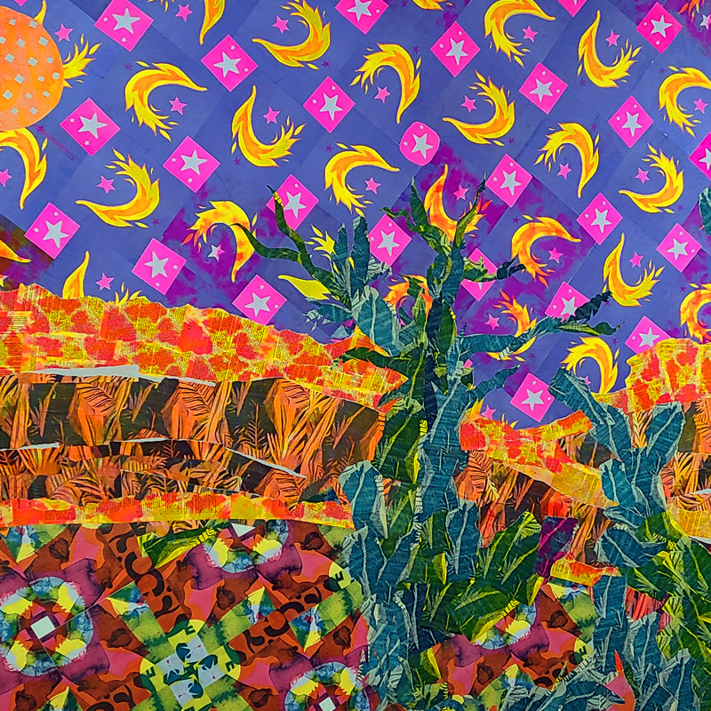
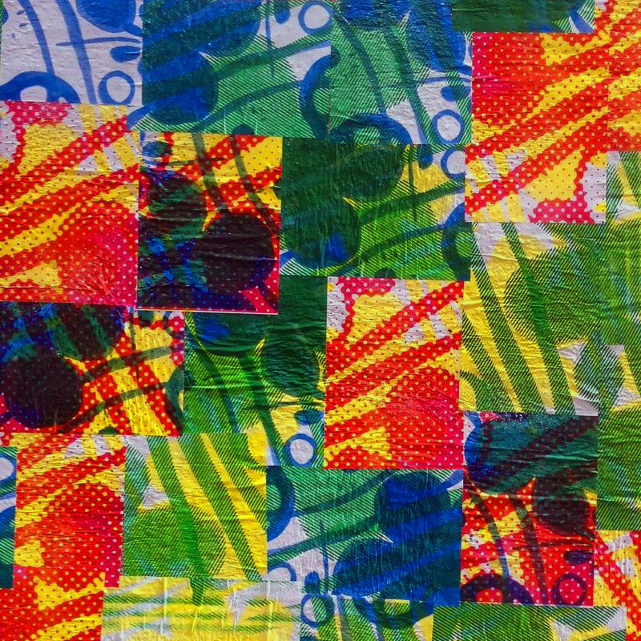

OFF THE PRESS
Imprimerie par risographie
Off se Press se printanise !
Commandez vos impressions à nil@nl-pk.com
STAGE RISO 30/03/2024
Ne manquez pas la date, et venez vous initier à cette technique d'impression si
particulière. Apprenez la préparation de vos images en vue
de sa reproduction par risographie et façonnez vos ouvrages !
RDV de 14h à 18h le 27/01/24 à
Oui j'en veux !
HAZARDOUS ÉDITORIAL
présente :
CHROMATIQUE ÉPHÉMÉRIDES
CHROMATIQUE ÉPHÉMÉRIDES
est une redondance d'expériences imprimées, menés par le
laboratoire HAZARDOUS ÉDITORIAL. L'ouvrage est publié
de manière parfaitement cyclique sur des espaces
temps discontinu, ce qui lui confère ce caractère si irrégulier
et imprévus. Il s'agit de fixer des instants quantique de création. CHROMATIQUE ÉPHÉMÉRIDES
est une expérience à laquelle vous pouvez prendre part.
L'épreuve est disponible est disponible uniquement dans une dimension physique,
et bientôt sous un format numérique.
@CHROMATIC.EPHEMERIS
What did you say ?
Murs & Papier
collage d'imprimé riso d'envergure - EXT & INT


Collage d'imprimés riso. GET INTO THE LANDSCAPE!
Compositions éphemères ou pérennes. AT ALL SCALES !
Get more infos
LIENS UTILES